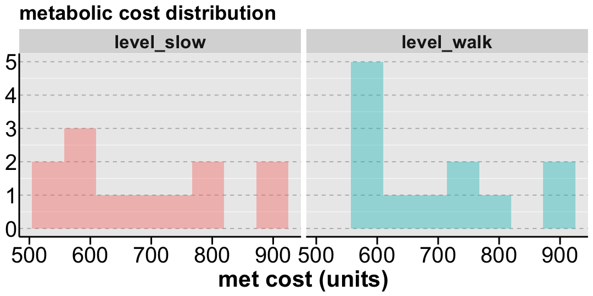
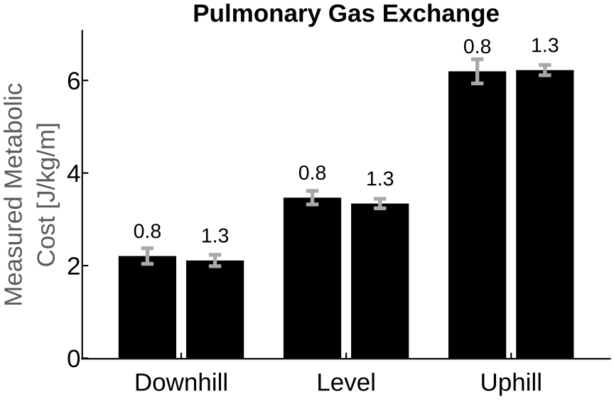
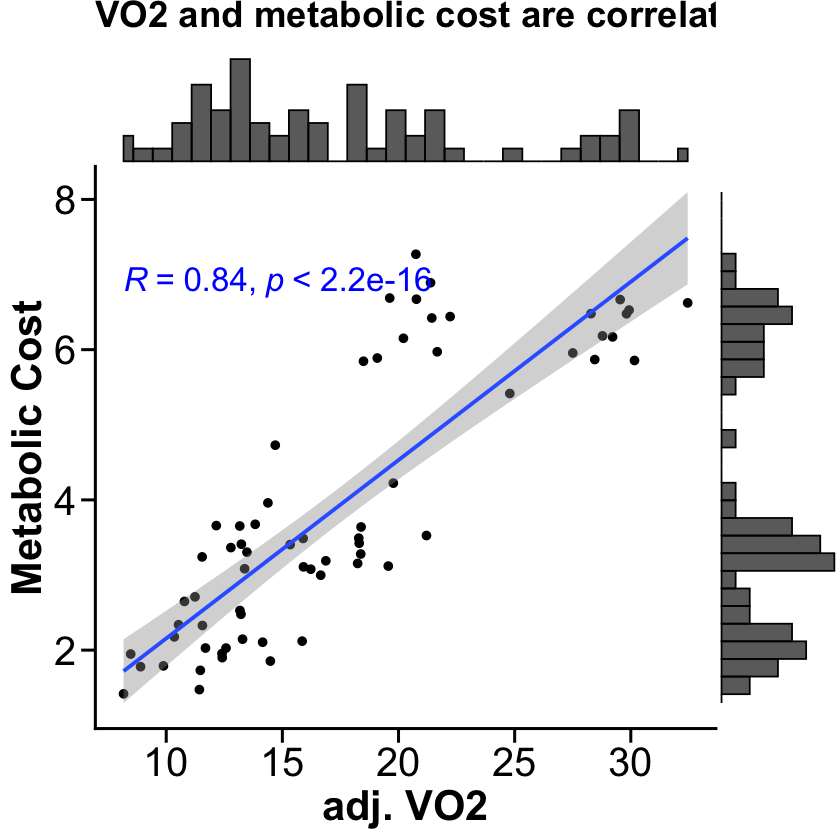
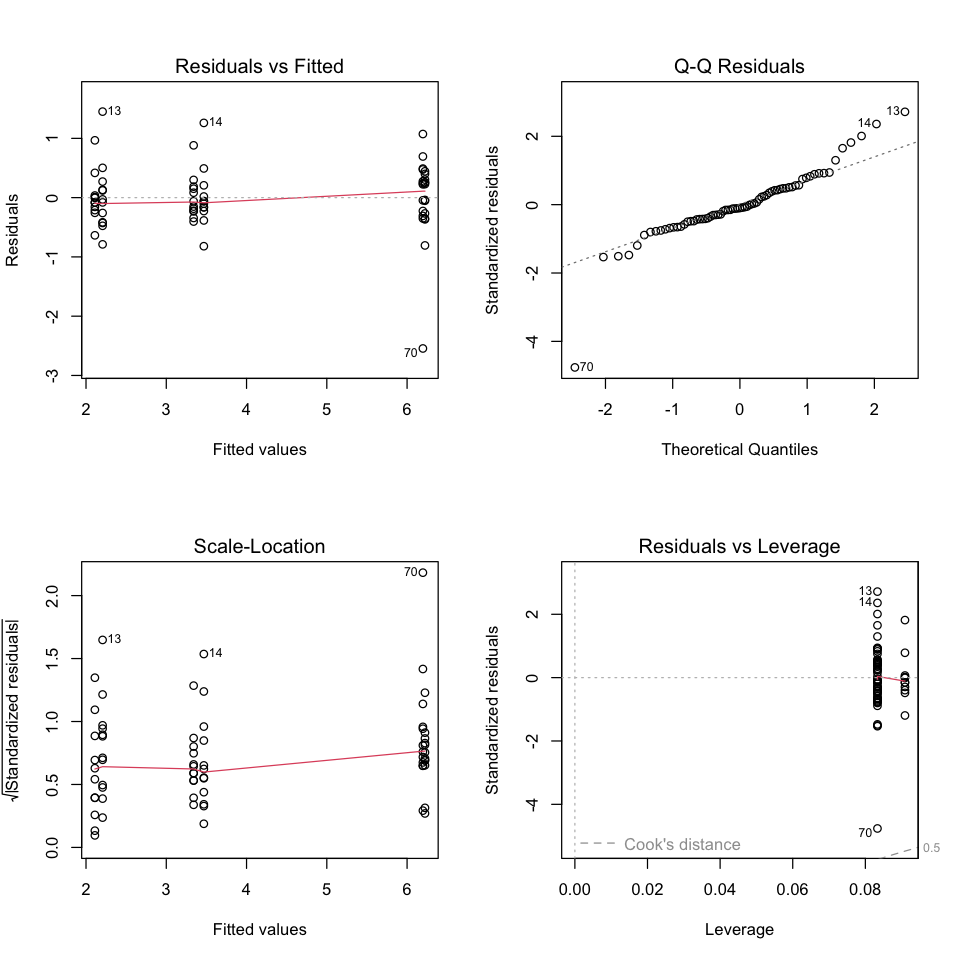
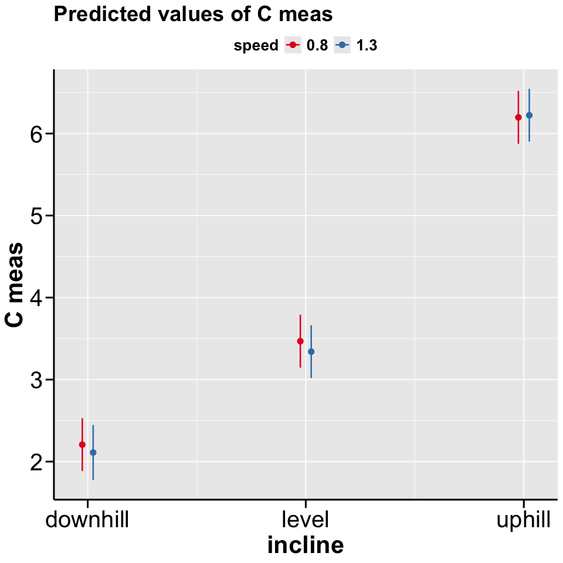

Week 5: Statistics#
In Week 4, we used visualization to ‘analyze’ our data. While visualizing data is often the first step in analysis, it only allows us to eyeball patterns and relationships. This week, we move beyond visual inspection to statistical analysis. Statistics allow us to perform two main types of analysis:
Describe what we observed in our data, and
Infer what our data tells us about the broader population
Today we’ll learn to conduct these statistical analyses in R. This lesson will cover:
Build summary tables and figures for our dataset using
dplyr,tidyr, andggplot2Run basic statistical tests (t-tests, ANOVA, correlations) and interpret output
Fit linear models with
lm()and interpret coefficientsEstimate marginal means using
emmeansand run pairwise comparisons
Clean the entire workspace#
rm(list=ls())
Load required libraries#
ReqdLibs = c("readxl","dplyr","tidyr","gt","sjPlot",
"ggplot2","ggthemes","ggpubr","ggExtra",
"lme4","emmeans","janitor","broom","car","IRdisplay")
invisible(lapply(ReqdLibs, library, character.only = TRUE))
Attaching package: ‘dplyr’
The following objects are masked from ‘package:stats’:
filter, lag
The following objects are masked from ‘package:base’:
intersect, setdiff, setequal, union
Attaching package: ‘ggplot2’
The following object is masked from ‘package:sjPlot’:
set_theme
Loading required package: Matrix
Attaching package: ‘Matrix’
The following objects are masked from ‘package:tidyr’:
expand, pack, unpack
Warning message:
“package ‘emmeans’ was built under R version 4.5.2”
Welcome to emmeans.
Caution: You lose important information if you filter this package's results.
See '? untidy'
Attaching package: ‘janitor’
The following objects are masked from ‘package:stats’:
chisq.test, fisher.test
Loading required package: carData
Attaching package: ‘car’
The following object is masked from ‘package:dplyr’:
recode
Theme defaults#
thm = theme(
strip.text.x=element_text(size=20,face="bold"),
strip.text.y=element_text(size=20,face="bold"),
legend.text=element_text(size=16,face="bold"),
legend.position = "top",
legend.title=element_text(size=16,face="bold"),
title =element_text(size=14, face='bold'),
text = element_text(colour = "black",size=18),
plot.title = element_text(colour = "black",size = 22, face = "bold"),
axis.ticks.length = unit(0.3,"cm"),
axis.line = element_line(colour = "black",linewidth=0.85),
axis.ticks = element_line(colour = "black",linewidth=0.85),
axis.text = element_text(colour = "black",size=24),
axis.title=element_text(size=25))
1. Summarize our sample in tables and figures#
Read data#
# Read in demographics data
demo <- read_excel("SubjectInfo.xlsx")
# Display structure of demo data
head(demo)
| Subject No | Age | Reported Weight (kg) | Reported Length (cm) | Gender | Level Slow | Level Walk | Weight from force plates(kg) |
|---|---|---|---|---|---|---|---|
| <chr> | <dbl> | <dbl> | <dbl> | <chr> | <dbl> | <dbl> | <dbl> |
| Sub1 | 26 | 86 | 185 | M | 885.5529 | 891.5307 | 90.57511 |
| Sub2 | 28 | 77 | 178 | F | 767.7686 | 760.2377 | 77.88004 |
| Sub3 | 21 | 52 | 170 | M | 530.6408 | 558.2018 | 55.49656 |
| Sub4 | 25 | 73 | 168 | M | NA | NA | NA |
| Sub5 | 34 | 86 | 173 | M | 878.6303 | 898.5188 | 90.57845 |
| Sub6 | 19 | 54 | 160 | F | 553.4936 | 558.2845 | 56.66555 |
Clean up variable names in the demo table#
demo_clean = clean_names(demo) %>% filter(subject_no!="Sub4")
head(demo_clean)
| subject_no | age | reported_weight_kg | reported_length_cm | gender | level_slow | level_walk | weight_from_force_plates_kg |
|---|---|---|---|---|---|---|---|
| <chr> | <dbl> | <dbl> | <dbl> | <chr> | <dbl> | <dbl> | <dbl> |
| Sub1 | 26 | 86 | 185 | M | 885.5529 | 891.5307 | 90.57511 |
| Sub2 | 28 | 77 | 178 | F | 767.7686 | 760.2377 | 77.88004 |
| Sub3 | 21 | 52 | 170 | M | 530.6408 | 558.2018 | 55.49656 |
| Sub5 | 34 | 86 | 173 | M | 878.6303 | 898.5188 | 90.57845 |
| Sub6 | 19 | 54 | 160 | F | 553.4936 | 558.2845 | 56.66555 |
| Sub7 | 21 | 59 | 163 | F | 605.0228 | 605.9027 | 61.71893 |
Let’s look at histrograms for level-slow and level-walk#
options(repr.plot.width = 9, repr.plot.height = 4.5)
# just for plotting, let's pivot the level_slow and level_walk to look at their distributions together
demo_hist = demo_clean %>% pivot_longer(cols = c(level_slow, level_walk), names_to = "MetCost_cond",values_to = "MetCost_val")
# visualize distributions using geom_histogram
ggplot(data = demo_hist, aes(x = MetCost_val, y = after_stat(count), fill = MetCost_cond)) +
geom_histogram(bins = 8,alpha = 0.4, show.legend = FALSE) +
labs(title = "metabolic cost distribution", x = "met cost (units)") +
facet_grid(~MetCost_cond) +
theme_cleveland() + thm

2. Run basic statistical tests#
So you recall the figure we reproduced in Week 4. Let’s try to run some basic comparisons using these data.

# Read in calculated dataset
data_calc <- read.csv("calcData.csv")
# data_calc = data_calc %>% filter(Sub!="Sub4")
head(data_calc)
| Sub | cond | incline | speed | R | VT | VE | VO2 | age | reported_weight_kg | reported_length_cm | gender | level_slow | level_walk | weight_from_force_plates_kg | adjVO2 | W | W_rest | W_adj | C_meas | |
|---|---|---|---|---|---|---|---|---|---|---|---|---|---|---|---|---|---|---|---|---|
| <chr> | <chr> | <chr> | <dbl> | <dbl> | <dbl> | <dbl> | <dbl> | <int> | <int> | <int> | <chr> | <dbl> | <dbl> | <dbl> | <dbl> | <dbl> | <dbl> | <dbl> | <dbl> | |
| 1 | Sub1 | walk | downhill | 0.8 | 0.9019424 | 0.7859465 | 20.33910 | 728.5032 | 26 | 86 | 185 | M | 885.5529 | 891.5307 | 90.57511 | 8.470967 | 2.920638 | 1.362433 | 1.558204 | 1.947756 |
| 2 | Sub1 | walk | downhill | 1.3 | 0.8661119 | 0.8409442 | 25.83893 | 1005.2468 | 26 | 86 | 185 | M | 885.5529 | 891.5307 | 90.57511 | 11.688916 | 3.998645 | 1.362433 | 2.636212 | 2.027855 |
| 3 | Sub1 | walk | level | 1.3 | 0.8340541 | 1.0104406 | 32.61279 | 1368.0726 | 26 | 86 | 185 | M | 885.5529 | 891.5307 | 90.57511 | 15.907821 | 5.403549 | 1.362433 | 4.041116 | 3.108550 |
| 4 | Sub1 | walk | uphill | 0.8 | 0.8661413 | 1.2505480 | 40.73454 | 1687.3811 | 26 | 86 | 185 | M | 885.5529 | 891.5307 | 90.57511 | 19.620710 | 6.712065 | 1.362433 | 5.349632 | 6.687040 |
| 5 | Sub1 | walk | uphill | 1.3 | 0.8315770 | 1.4630620 | 58.84244 | 2540.5691 | 26 | 86 | 185 | M | 885.5529 | 891.5307 | 90.57511 | 29.541501 | 10.029119 | 1.362433 | 8.666686 | 6.666682 |
| 6 | Sub1 | walk | level | 0.8 | 0.8727268 | 1.0036957 | 26.00091 | 992.9288 | 26 | 86 | 185 | M | 885.5529 | 891.5307 | 90.57511 | 11.545684 | 3.955388 | 1.362433 | 2.592955 | 3.241194 |
Paired T-Tests#
Now, you can see that this really is a 3x2 repeated measures design (3 inclines and 2 speeds) but let’s begin by running a simple paired t-test to compare the measured metabolic cost between the fast and slow speeds. And then interpret the output.
# first make sure there in fact are complete paired observations
table(data_calc$speed)
# See the data structure
data_calc %>% count(Sub, speed)
0.8 1.3
36 35
| Sub | speed | n |
|---|---|---|
| <chr> | <dbl> | <int> |
| Sub1 | 0.8 | 3 |
| Sub1 | 1.3 | 3 |
| Sub10 | 0.8 | 3 |
| Sub10 | 1.3 | 3 |
| Sub11 | 0.8 | 3 |
| Sub11 | 1.3 | 3 |
| Sub12 | 0.8 | 3 |
| Sub12 | 1.3 | 2 |
| Sub13 | 0.8 | 3 |
| Sub13 | 1.3 | 3 |
| Sub2 | 0.8 | 3 |
| Sub2 | 1.3 | 3 |
| Sub3 | 0.8 | 3 |
| Sub3 | 1.3 | 3 |
| Sub4 | 0.8 | 3 |
| Sub4 | 1.3 | 3 |
| Sub6 | 0.8 | 3 |
| Sub6 | 1.3 | 3 |
| Sub7 | 0.8 | 3 |
| Sub7 | 1.3 | 3 |
| Sub8 | 0.8 | 3 |
| Sub8 | 1.3 | 3 |
| Sub9 | 0.8 | 3 |
| Sub9 | 1.3 | 3 |
# remove non-complete cases
data_calc2 = data_calc %>% filter(Sub!="Sub12")
# Compare C_meas between speeds 0.8 and 1.3
slow_speed <- data_calc2 %>% filter(speed == 0.8) %>% pull(C_meas)
fast_speed <- data_calc2 %>% filter(speed == 1.3) %>% pull(C_meas)
# uncomment below to view the two sets of numbers
# slow_speed
# fast_speed
# Paired t-test
result <- t.test(slow_speed, fast_speed, paired = TRUE)
result
Paired t-test
data: slow_speed and fast_speed
t = 0.20974, df = 32, p-value = 0.8352
alternative hypothesis: true mean difference is not equal to 0
95 percent confidence interval:
-0.5181596 0.6371173
sample estimates:
mean difference
0.05947885
ANOVA#
Simple ANOVA#
Here’s a simple one-way ANOVA that treats all observations as independent.
simple_anova_model <- aov(C_meas ~ incline, data = data_calc2)
summary(simple_anova_model)
Df Sum Sq Mean Sq F value Pr(>F)
incline 2 186.33 93.17 293.2 <2e-16 ***
Residuals 63 20.02 0.32
---
Signif. codes: 0 ‘***’ 0.001 ‘**’ 0.01 ‘*’ 0.05 ‘.’ 0.1 ‘ ’ 1
Repeated Measures ANOVA#
But you and I know that these observations are NOT independent.
This violates a key assumption of the ANOVA.
So to account for the repeated measures structure, we change the simple ANOVA by adding an Error() term specified as Error(Sub/incline) which tells R that incline measurements are nested within subjects and hence not independent.
rm_anova_model <- aov(C_meas ~ incline + Error(Sub/incline),
data = data_calc2)
summary(rm_anova_model)
Error: Sub
Df Sum Sq Mean Sq F value Pr(>F)
Residuals 10 9.073 0.9073
Error: Sub:incline
Df Sum Sq Mean Sq F value Pr(>F)
incline 2 186.33 93.17 329.7 4.89e-16 ***
Residuals 20 5.65 0.28
---
Signif. codes: 0 ‘***’ 0.001 ‘**’ 0.01 ‘*’ 0.05 ‘.’ 0.1 ‘ ’ 1
Error: Within
Df Sum Sq Mean Sq F value Pr(>F)
Residuals 33 5.296 0.1605
Correlations#
We can also examine relationships between continuous variables. Here we test the correlation between adjusted VO2 and metabolic cost using Pearson correlation and visualize it with a scatterplot.
data_calc2 %>%
with(cor.test(C_meas, adjVO2, method = "spearman"))
Spearman's rank correlation rho
data: C_meas and adjVO2
S = 7708, p-value < 2.2e-16
alternative hypothesis: true rho is not equal to 0
sample estimates:
rho
0.8390982
options(repr.plot.width = 7, repr.plot.height = 7)
cor_plot <-
ggplot(data = data_calc2, aes(x = adjVO2,y = C_meas)) +
geom_point(size = 2) + geom_smooth(formula = 'y~x',method = "lm") +
# the stat_cor function from ggpubr is a neat way to add correlation values on the plot itself
stat_cor(method = "spearman", size = 7, col = "blue") +
labs(title = "VO2 and metabolic cost are correlated", y = "Metabolic Cost", x = "adj. VO2") +
theme_classic2() + thm
# cor_plot
ggMarginal(cor_plot, type = "histogram")

3. Fit linear models#
In this case, because we intend to establish mean differences, fitting a linear model actually is much like running a t-test or ANOVA as we did above. Except it allows us to set interaction terms and do so with missing observations.
lm_fit <- lm(C_meas ~ incline * as.factor(speed), data = data_calc)
summary(lm_fit)
confint(lm_fit)
Call:
lm(formula = C_meas ~ incline * as.factor(speed), data = data_calc)
Residuals:
Min 1Q Median 3Q Max
-2.54476 -0.24414 -0.05276 0.25556 1.45122
Coefficients:
Estimate Std. Error t value Pr(>|t|)
(Intercept) 2.20663 0.16112 13.696 < 2e-16 ***
inclinelevel 1.26123 0.22786 5.535 5.99e-07 ***
inclineuphill 3.99038 0.22786 17.513 < 2e-16 ***
as.factor(speed)1.3 -0.09619 0.23298 -0.413 0.681
inclinelevel:as.factor(speed)1.3 -0.03100 0.32588 -0.095 0.924
inclineuphill:as.factor(speed)1.3 0.12202 0.32588 0.374 0.709
---
Signif. codes: 0 ‘***’ 0.001 ‘**’ 0.01 ‘*’ 0.05 ‘.’ 0.1 ‘ ’ 1
Residual standard error: 0.5581 on 65 degrees of freedom
Multiple R-squared: 0.9095, Adjusted R-squared: 0.9026
F-statistic: 130.7 on 5 and 65 DF, p-value: < 2.2e-16
| 2.5 % | 97.5 % | |
|---|---|---|
| (Intercept) | 1.8848516 | 2.5284087 |
| inclinelevel | 0.8061620 | 1.7162893 |
| inclineuphill | 3.5353116 | 4.4454388 |
| as.factor(speed)1.3 | -0.5614770 | 0.3691051 |
| inclinelevel:as.factor(speed)1.3 | -0.6818334 | 0.6198250 |
| inclineuphill:as.factor(speed)1.3 | -0.5288127 | 0.7728457 |
#ooh, btw, check this out:
display_markdown("#### BTW, if you ran an ANOVA of this linear model, it would give you the exact same estimates as your original ANOVA!")
anova(lm_fit)
BTW, if you ran an ANOVA of this linear model, it would give you the exact same estimates as your original ANOVA!
| Df | Sum Sq | Mean Sq | F value | Pr(>F) | |
|---|---|---|---|---|---|
| <int> | <dbl> | <dbl> | <dbl> | <dbl> | |
| incline | 2 | 203.36432749 | 101.68216375 | 326.4114629 | 1.256380e-34 |
| as.factor(speed) | 1 | 0.07587859 | 0.07587859 | 0.2435790 | 6.232965e-01 |
| incline:as.factor(speed) | 2 | 0.07828560 | 0.03914280 | 0.1256529 | 8.821346e-01 |
| Residuals | 65 | 20.24849430 | 0.31151530 | NA | NA |
Model Diagnostics#
Residuals vs Fitted: Checks if relationship is linear and variance is constant.
We want random scatter around horizontal line at 0.
Q-Q Plot: Checks if residuals are normally distributed
We want points to follow the diagonal line closely
Scale-Location: Checks if variance is constant across fitted values (homoscedasticity)
We want horizontal line with random scatter (no systematic shape)
Residuals vs Leverage: Identifies influential points
Ideally, we want all points to be within Cook’s distance lines
options(repr.plot.width = 8, repr.plot.height = 8)
par(mfrow = c(2,2))
plot(lm_fit)
# WE can also print out the exact values and indices of the influential observations
cooksd <- cooks.distance(lm_fit)
influential <- which(cooksd > 4/nrow(data_calc))
print(paste("Influential observation #", influential, "C Meas is", cooksd[influential]))
[1] "Influential observation # 13 C Meas is 0.111746052521325"
[2] "Influential observation # 14 C Meas is 0.0843345595874919"
[3] "Influential observation # 16 C Meas is 0.0610988460034664"
[4] "Influential observation # 70 C Meas is 0.343605624121243"

Publication-ready regression tables#
Here, I am usign the sjPlot package to show you an example of a publication-ready regression table. There are many ways/packages to acheive the same type of table, e.g., gt and gtsummary packages.
regression_table = tab_model(lm_fit, show.stat = TRUE,
dv.labels = "Measured Metabolic Cost")
display_html(regression_table$page.complete)
# save as HTML (my preferred method! and from there copy and paste into your Word Doc)
writeLines(regression_table$page.complete, "HTML-regression-table.html")
# or save as Word doc (only saves as .doc)
tab_model(lm_fit, dv.labels = "Measured Metabolic Cost", file = "DOC-regression-table.doc")
| Measured Metabolic Cost | ||||
|---|---|---|---|---|
| Predictors | Estimates | CI | Statistic | p |
| (Intercept) | 2.21 | 1.88 – 2.53 | 13.70 | <0.001 |
| incline [level] | 1.26 | 0.81 – 1.72 | 5.54 | <0.001 |
| incline [uphill] | 3.99 | 3.54 – 4.45 | 17.51 | <0.001 |
| speed [1.3] | -0.10 | -0.56 – 0.37 | -0.41 | 0.681 |
| incline [level] × speed [1.3] |
-0.03 | -0.68 – 0.62 | -0.10 | 0.924 |
| incline [uphill] × speed [1.3] |
0.12 | -0.53 – 0.77 | 0.37 | 0.709 |
| Observations | 71 | |||
| R2 / R2 adjusted | 0.910 / 0.903 | |||
4. Post-hoc pairwise comparisons with marginal means#
Fast (0.8) |
Slow (1.3) |
Row Mean |
|
|---|---|---|---|
Downhill |
2.21 |
2.11 |
2.16 |
Level |
3.47 |
3.34 |
3.41 |
Uphill |
6.20 |
6.22 |
6.21 |
Col Mean |
3.96 |
3.89 |
3.93 |
EMMs allow us to follow up significant main effects by testing which specific groups differ from each other, with appropriate corrections for multiple comparisons.
Estimate marginal means#
Note that ours is an interaction model, and we know that the effect of speed is not significant. So really we would like marginal means for incline.
# Estimated marginal means for speed - the same as were compared by the t-test
speed_means <- emmeans(lm_fit, ~ speed)
speed_means
print("============================================")
# Estimated marginal means for incline - the same as were compared by the ANOVA
incline_means <- emmeans(lm_fit, ~ incline)
incline_means
print("============================================")
# Estimated marginal means for both factors - "splits" them by these two factors
speed_by_incline_means <- emmeans(lm_fit, ~ speed + incline)
speed_by_incline_means
print("============================================")
# Plot estimated marginal means
plot_model(lm_fit, type = "pred", terms = c("incline", "speed")) + thm
NOTE: Results may be misleading due to involvement in interactions
speed emmean SE df lower.CL upper.CL
0.8 3.96 0.0930 65 3.77 4.14
1.3 3.89 0.0944 65 3.70 4.08
Results are averaged over the levels of: incline
Confidence level used: 0.95
[1] "============================================"
NOTE: Results may be misleading due to involvement in interactions
incline emmean SE df lower.CL upper.CL
downhill 2.16 0.116 65 1.93 2.39
level 3.40 0.114 65 3.18 3.63
uphill 6.21 0.114 65 5.98 6.44
Results are averaged over the levels of: speed
Confidence level used: 0.95
[1] "============================================"
speed incline emmean SE df lower.CL upper.CL
0.8 downhill 2.21 0.161 65 1.88 2.53
1.3 downhill 2.11 0.168 65 1.77 2.45
0.8 level 3.47 0.161 65 3.15 3.79
1.3 level 3.34 0.161 65 3.02 3.66
0.8 uphill 6.20 0.161 65 5.88 6.52
1.3 uphill 6.22 0.161 65 5.90 6.54
Confidence level used: 0.95
[1] "============================================"
Some of the focal terms are of type `character`. This may lead to
unexpected results. It is recommended to convert these variables to
factors before fitting the model.
The following variables are of type character: `incline`
Ignoring unknown labels:
• linetype : "speed"
• shape : "speed"

Run pairwise comparisons among the various inclines#
# With adjustment for multiple comparisons
pairs(incline_means, adjust = "tukey")
print("============================================")
pairs(incline_means, adjust = "bonferroni")
contrast estimate SE df t.ratio p.value
downhill - level -1.25 0.163 65 -7.645 <0.0001
downhill - uphill -4.05 0.163 65 -24.864 <0.0001
level - uphill -2.81 0.161 65 -17.413 <0.0001
Results are averaged over the levels of: speed
P value adjustment: tukey method for comparing a family of 3 estimates
[1] "============================================"
contrast estimate SE df t.ratio p.value
downhill - level -1.25 0.163 65 -7.645 <0.0001
downhill - uphill -4.05 0.163 65 -24.864 <0.0001
level - uphill -2.81 0.161 65 -17.413 <0.0001
Results are averaged over the levels of: speed
P value adjustment: bonferroni method for 3 tests
Testing only for hypothesized effects#
If you had a hypothesis going in, for example, only uphill will differ from the other two conditions. The other two conditions will not differ from one another, then you can run this comparison by manually specifying contrasts.
# check levels (what comes first, second and third)
factor(data_calc$incline) %>% levels()
# incline_means
contrast(incline_means,
list("Uphill - Downhill" = c(-1, 0, 1), # Compare uphill to downhill
"Uphill - Level" = c(0, -1, 1))) # Compare uphill to level
- 'downhill'
- 'level'
- 'uphill'
contrast estimate SE df t.ratio p.value
Uphill - Downhill 4.05 0.163 65 24.864 <0.0001
Uphill - Level 2.81 0.161 65 17.413 <0.0001
Results are averaged over the levels of: speed